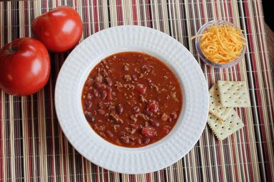

Home
Chilli

Ingredients
- 1 Pound Ground Beef
- 1 Shallot
- 1 Bay Leaf
- 1 28oz Can of Tomato Sauce
- 2 Teaspoons Cumin
- 2 Teaspoons Paprika
- 2 Teaspoons Chili Powder
- 5 Cloves of Garlic, Minced
- 1/4 Teaspoon Pepper
- Salt to taste
- 1 Teaspoon Basil
- 1 Can Tomato Paste
- 2 Jalapenos (optional)
- 2 Teaspoons Onion Powder
- 1 Can Dark Kidney Beans
- 1 Teaspoon Worcestershire Sauce
- 1/4 Teaspoon Cinnamon
- 1/4 Teaspoon Sage
Directions
- In a skillet over medium heat brown the ground beef.
- In a crockpot combine tomato paste, tomato sauce, garlic, spice, shallots and Jalapenos if desired. Taste and add more spices if needed.
- Add ground beef to crockpot.
- Set Crockpot to High for 2 1/2 hours, then low for another 2 1/2 hours. Taste throughout and add additional seasoning if needed.
- Top with cheese if desired and enjoy!